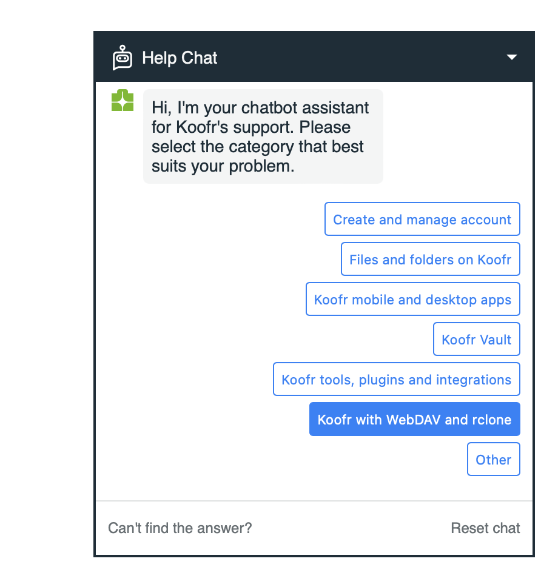
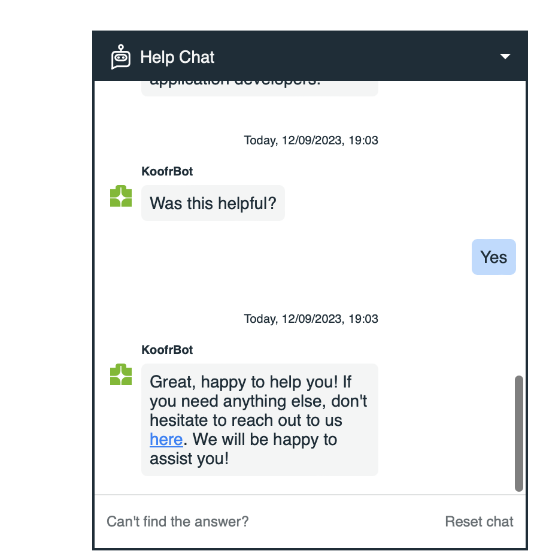
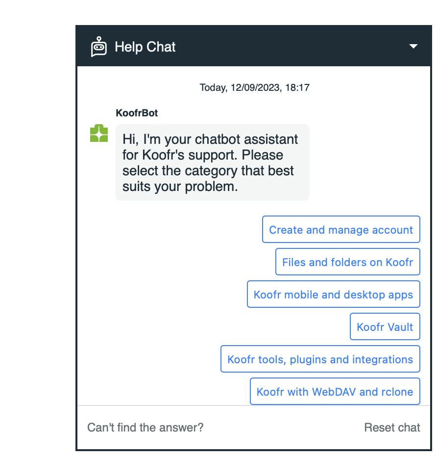

Chatbot Design · JavaScript
Created a chatbot for Koofr, a company that develops cloud storage software.
During my internship at Koofr, I developed a category-based chatbot for the company’s website and app, aimed at improving customer support and engagement through a streamlined, conversational interface. It was also designed to relieve some of the support workload by handling common, straightforward issues directly, so the team could focus on the more complex requests.



The interaction was initiated by presenting users with a list of initial categories to choose from. Users navigated through these options until they reached the answer to their question, at which point the chatbot asked whether the response met their needs. If the answer was not satisfactory, users had the option to reach out to the company directly for further assistance.